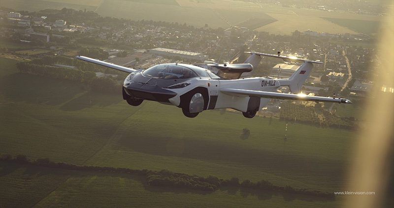

Lidojošais automobilis

Lidojošai automašīnai, kas spēj sasniegt ātrumu virs 100 jūdzes stundā (160 kmh) un augstumā virs 8000 pēdu (2500 m),
Slovākijas Transporta iestāde ir izsniegusi lidojumderīguma sertifikātu.
Atpakaļ